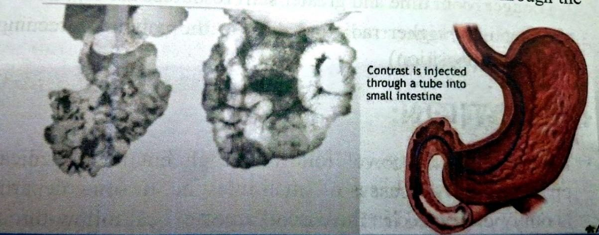

متابعة مرور التباينLecture 4: Contrast Follow Through
نظري · م04 · 12.9 دقيقةأقسام المحاضرة (10)
- التعريف وتشريح الأمعاء الدقيقةCONTRAST FOLLOW THROUGH
- الدواعي والموانعINDICATIONS
- مادة التباين وتحضير المريضCONTRAST MEDIUM
- الأنواع والتقنيةTECHNIQUE
- الصور واللقطات الإضافيةImages
- حقنة الأمعاء الدقيقة: المزايا والعيوبSMALL BOWEL ENEMA
- المادة والتحضير والأنابيبCONTRAST MEDIUM & EQUIPMENT
- تقنية حقنة الأمعاء الدقيقةTechnique
- التباين المفرد والمزدوج وأمثلة الأمراضSINGLE & DOUBLE CONTRAST ENTEROCLYSIS
- أسئلة المراجعة والحالةReview questions & Case
التعريف وتشريح الأمعاء الدقيقةCONTRAST FOLLOW THROUGH
Barium follow-through & small bowel enema are two basic types of small bowel examination to examine small bowel in its entirety i.e. to evaluate functional capabilities as well as morphological abnormalities.
متابعة مرور الباريوم وحقنة الأمعاء الدقيقة هما النوعان الأساسيان لفحص الأمعاء الدقيقة لفحصها بكاملها، أي لتقييم قدراتها الوظيفية والاضطرابات الشكلية فيها.
تشريح الأمعاء الدقيقةANATOMY OF THE SMALL INTESTINE:
- • Extends from pyloric sphincter of stomach to ileoceacal valve, where it joins large intestine at right angle.تمتد من العاصرة البوّابية للمعدة إلى الصمام اللفائفي الأعوري، حيث تتصل بالأمعاء الغليظة بزاوية قائمة.
- • Lies in abdominal cavity surrounded by large intestineتقع في تجويف البطن، وتحيط بها الأمعاء الغليظة.
- • About 6.5 m long & diameter gradually decreases from about 3.8 cm in proximal part to approximately 2.5 cm in distal part.طولها نحو 6.5 م، وقطرها يقل تدريجياً من نحو 3.8 سم في الجزء القريب إلى نحو 2.5 سم في الجزء البعيد.
- • Wall contains 4 layers serosa, muscle layer, submucosa & mucosa. Mucosa contains finger- like projections called villi.جدارها 4 طبقات: المصلية، والعضلية، وتحت المخاطية، والمخاطية. وفي المخاطية نتوءات تشبه الأصابع تُسمّى الزغابات.
- • Divided into 3 portions: Duodenum, Jejunum & Ileum.تنقسم إلى 3 أجزاء: الاثنا عشري، والصائم، واللفائفي.
الدواعي والموانعINDICATIONS
الدواعيINDICATIONS:
- 1. Pain with weight loss.ألم مع نقص الوزن.
- 2. Diarrhea.الإسهال.
- 3. Transfusion-dependent anemia/gastrointestinal bleeding unexplained by colonic or gastric investigation.فقر الدم المعتمد على نقل الدم، أو نزف الجهاز الهضمي غير المفسّر بفحوصات القولون أو المعدة.
- 4. Partial obstruction.الانسداد الجزئي.
- 5. Malabsorption.سوء الامتصاص.
- 6. Small bowel adhesive obstruction (water soluble contrast).انسداد الأمعاء الدقيقة بسبب الالتصاقات (بمادة تباين ذائبة في الماء).
موانع الاستعمالCONTRAINDICATIONS:
- 1. Complete or high-grade obstruction is better evaluated by CT examination.الانسداد الكامل أو الشديد يُقيَّم بصورة أفضل بفحص CT.
- 2. Suspected perforation is better evaluated by CT.الاشتباه بالانثقاب يُقيَّم بصورة أفضل بفحص CT.
الانسداد المعويIntestinal obstruction:
Plain X-ray examination of the abdomen showing multiple gas distended small bowel loops, the erect film showed multiple air-fluid levels diagnostic of small bowel obstruction
الصورة الشعاعية البسيطة للبطن تُظهر عدة عرى من الأمعاء الدقيقة متوسّعة بالغاز، والصورة بالوضع القائم أظهرت عدة مستويات هواء–سائل تشخّص انسداد الأمعاء الدقيقة.
مادة التباين وتحضير المريضCONTRAST MEDIUM
مادة التباينCONTRAST MEDIUM:
- • E-Z Paque 100% w/v 300 mL usually given divided over 20 minE-Z Paque بتركيز 100% وزن/حجم، 300 مل، تُعطى عادةً مقسّمة على 20 دقيقة.
- • Medium density barium suspension (50-60% w/v).معلّق باريوم متوسط الكثافة (50–60% وزن/حجم).
- • (150 ml if performed immediately after barium meal)(150 مل إذا أُجري الفحص مباشرةً بعد وجبة الباريوم).
- • The transit time through the small bowel is reduced by the addition of 10 mL of Gastrografin to the barium, improving distension and reducing flocculation.يقل زمن المرور عبر الأمعاء الدقيقة بإضافة 10 مل من الغاستروغرافين إلى الباريوم، فيتحسّن التوسّع ويقل التلبّد.
- • Water-soluble small bowel contras studies are rarely diagnostic, as contrast becomes diluted in small bowel fluid resulting in poor mucosal and anatomic detail.دراسات الأمعاء الدقيقة بمادة التباين الذائبة في الماء نادراً ما تكون تشخيصية، لأن المادة تتخفّف في سوائل الأمعاء الدقيقة فتضعف التفاصيل المخاطية والتشريحية.
تحضير المريضPatient preparation:
- 1. A low residue-diet for 2 days prior to the examination.نظام غذائي قليل الفضلات لمدة يومين قبل الفحص.
- 2. A laxative should be taken on the evening prior to the examination.يُؤخذ مسهّل في مساء اليوم السابق للفحص.
- 3. NPO for 6 hrs. prior to examination.لا شيء عن طريق الفم (NPO) لمدة 6 ساعات قبل الفحص.
- 4. Metoclopramide 20 ang orally given 20 min before or during the examination to er hance gastric emptying.يُعطى الميتوكلوبراميد 20 ملغم بالفم قبل الفحص بـ 20 دقيقة أو أثناءه لتحسين إفراغ المعدة.
- 5. Pt's bladder must be empty before & during procedure to avoid displacing or compressing ileum.يجب أن تكون مثانة المريض فارغة قبل الإجراء وأثناءه لتجنّب إزاحة اللفائفي أو الضغط عليه.
- 6. Pt must be informed that the barium may taste chalky.يجب إبلاغ المريض بأن طعم الباريوم قد يكون طباشيرياً.
الأنواع والتقنيةTECHNIQUE
أنواع متابعة مرور الباريوم في الأمعاء الدقيقةTypes of (S.B.F.T.) :
- • Single Contrast.التباين المفرد.
- • Double Contrast (with addition of an effervescent agent).التباين المزدوج (بإضافة مادة فوّارة).
- • With the addition of a pneumocolon technique.مع إضافة تقنية نفخ القولون بالهواء.
Note: Double contrast technique is normally adopted.
ملاحظة: تقنية التباين المزدوج هي المعتمدة عادةً.
التقنيةTECHNIQUE:
- • If the procedure is a continuation of barium meal (the patient already have Barium) so, 300 ml of high density 100% w/v usually given.إذا كان الإجراء استمراراً لوجبة الباريوم (المريض لديه باريوم أصلاً)، فيُعطى عادةً 300 مل من الباريوم عالي الكثافة بتركيز 100% وزن/حجم.
- • Patient is asked to drink this as rapidly as possible. then put the patient in the right side dependent position ((to aid rapid gastric emptying from stomach to duodenum and so on)).يُطلب من المريض أن يشربه بأسرع ما يمكن، ثم يوضع المريض على جانبه الأيمن (لمساعدة الإفراغ السريع للمعدة إلى الاثني عشري وما بعده).
- • After 15 to 20 minutes, a PA film is taken with the patient prone (( to separate the bowel loops due to compression on abdomen during prone position)).بعد 15–20 دقيقة تُؤخذ صورة PA والمريض منبطح (لفصل عرى الأمعاء بسبب الضغط على البطن في وضعية الانبطاح).
- • Then every 30 minutes (for the first 2 hours) films taken until the barium sulfate column passes through the ileocecal junction and progresses into the ascending colonثم تُؤخذ صور كل 30 دقيقة (في أول ساعتين) حتى يمرّ عمود كبريتات الباريوم عبر الوصل اللفائفي الأعوري ويتقدّم إلى القولون الصاعد.
- • To demonstrate ileocecal junction, supine right side up is the best position since ileum enters caecum in the posteromedial part (centering point to right iliac crest)لإظهار الوصل اللفائفي الأعوري، أفضل وضعية هي الاستلقاء على الظهر مع رفع الجانب الأيمن، لأن اللفائفي يدخل الأعور من جزئه الخلفي الإنسي (نقطة التمركز على العرف الحرقفي الأيمن).
- • All the filming is done with high kV technique (120-140 kV), mAs: 40-45جميع الصور تُؤخذ بتقنية الفولتية العالية (120–140 kV)، وmAs: 40–45.
الصور واللقطات الإضافيةImages
الصورImages
- 1. Prone PA images of the abdomen are taken every 15-20 min during the first hour, and subsequently every 20-30 min until the colon is reached. ((The prone position is used because the pressure on the abdomen helps separate the loops of the small bowel)).تُؤخذ صور PA للبطن والمريض منبطح كل 15–20 دقيقة في الساعة الأولى، ثم كل 20–30 دقيقة حتى يصل الباريوم إلى القولون. (تُستعمل وضعية الانبطاح لأن الضغط على البطن يساعد على فصل عرى الأمعاء الدقيقة).
- 2. Each image should be reviewed and spot supine fluoroscopic views, using a compression device or pad if appropriate, may be considered.يجب مراجعة كل صورة، ويمكن أخذ لقطات تنظير موضعية بالاستلقاء على الظهر باستعمال أداة أو وسادة ضغط عند الحاجة.
- 3. Dedicated spot views of the terminal ileum are routinely acquiredتُؤخذ روتينياً لقطات موضعية مخصّصة للّفائفي النهائي.
صور إضافيةAdditional Images
1. To separate loops of the small bowel:
1. لفصل عرى الأمعاء الدقيقة:
- • compression with fluoroscopyالضغط أثناء التنظير الشعاعي.
- • with x-ray tube angled into the pelvisبإمالة أنبوب الأشعة نحو الحوض.
- • Obliques: in particular with the right side raised for terminal ileum views, orالوضعيات المائلة: خاصةً برفع الجانب الأيمن للقطات اللفائفي النهائي، أو
- • occasionally with the patient tilted head downأحياناً بإمالة المريض والرأس إلى الأسفل.
e. pneumocolon: gaseous insufflation of the colon via a rectal tube after barium arr ves in the caecum, which often results in good-quality double-contrast views of the terminal ileum
هـ. نفخ القولون بالهواء: إدخال غاز إلى القولون عبر أنبوب شرجي بعد وصول الباريوم إلى الأعور، وغالباً يعطي لقطات تباين مزدوج جيدة النوعية للّفائفي النهائي.
2. Erect image: Occasionally used to reveal any fluid levels caused by contrast medium retained within diverticula.
2. الصورة بالوضع القائم: تُستعمل أحياناً لإظهار أي مستويات سائل بسبب مادة التباين المحتبسة داخل الرتوج.
جدول الصور والغرض منهاImages — Purpose
حقنة الأمعاء الدقيقة: المزايا والعيوبSMALL BOWEL ENEMA
حقنة الأمعاء الدقيقةSMALL BOWEL ENEMA
- • Another name is (Enteroclysis),اسمها الآخر: Enteroclysis.
- • It is the radiological study of small bowel frorn jejunum to the ileocaecal junction by intubation of the jejunum and instillation of contrast through the tube.هي الدراسة الشعاعية للأمعاء الدقيقة من الصائم إلى الوصل اللفائفي الأعوري، بإدخال أنبوب إلى الصائم وتقطير مادة التباين عبره.

الميزةADVANTAGE:
This procedure gives better distension and visualization of the proximal small bowel than barium follow-through because rapid infusion of a large continuous column of contrast medium directly into the jejunum by tube introduced through mouth to esophagus to stomach then duodenum till reach jejunum.
هذا الإجراء يعطي توسّعاً ورؤية أفضل للأمعاء الدقيقة القريبة من متابعة مرور الباريوم، بسبب التسريب السريع لعمود كبير مستمر من مادة التباين مباشرةً إلى الصائم بأنبوب يُدخل عبر الفم إلى المريء ثم المعدة ثم الاثني عشري حتى يصل إلى الصائم.
العيوبDISADVANTAGES:
- 1. Per-nasal/oral intubation may be unpleasant for the patient, and may prove difficult.إدخال الأنبوب عبر الأنف أو الفم قد يكون مزعجاً للمريض، وقد يكون صعباً.
- 2. Longer room time and greater staff resources are required.يحتاج وقتاً أطول في الغرفة وكادراً أكثر.
- 3. Potentially higher radiation dose to the patient (screening the tube into position)احتمال جرعة إشعاع أعلى للمريض (بسبب التنظير لإيصال الأنبوب إلى مكانه).
الداعيINDICATION:
Same as small bowel follow through but more dedicated for proximal part diseases of small intestine, In some departments it is only performed in the case of an equivocal follow-through.
مثل دواعي متابعة مرور الباريوم في الأمعاء الدقيقة، لكنها مخصّصة أكثر لأمراض الجزء القريب من الأمعاء الدقيقة، وفي بعض الأقسام لا تُجرى إلا في حالة نتيجة متابعة مرور غير حاسمة.
المادة والتحضير والأنابيبCONTRAST MEDIUM & EQUIPMENT
مادة التباينCONTRAST MEDIUM
- 1. Single contrast e.g. E-Z. Paque 70% w/v diluted; or Baritop 100% w/v (one 300 mL can made up to 1500 mL with water)التباين المفرد: مثلاً E-Z Paque 70% وزن/حجم مخفّفاً، أو Baritop 100% وزن/حجم (علبة واحدة 300 مل تُكمّل إلى 1500 مل بالماء).
- 2. 600 mL of 0.5% methylcellulose after 500 mL of 70% w/v barium.600 مل من الميثيل سيليلوز 0.5% بعد 500 مل من الباريوم 70% وزن/حجم.
تحضير المريضPatient Preparation
- 1. NBM after midnight.لا شيء عن طريق الفم (NBM) بعد منتصف الليل.
- 2. Stop antispasmodic drugs 1 day prior to the examination.إيقاف الأدوية المضادة للتشنّج قبل الفحص بيوم واحد.
- 3. Consider tetracaine lozenge 30 mg, 30 min before the examination.يمكن إعطاء قرص استحلاب تتراكايين 30 ملغم قبل الفحص بـ 30 دقيقة.
Preliminary Image: If vomiting, a plain abdominal film to exclude small bowel obstruction.
الصورة الأولية: إذا كان هناك تقيؤ، تُؤخذ صورة بسيطة للبطن لاستبعاد انسداد الأمعاء الدقيقة.
الأجهزةEQUIPMENT:
A choice of tubes is available:
تتوفر عدة أنابيب للاختيار:
- 1. Bilbao-dotter tube with a guide wire,أنبوب بلباو–دوتر مع سلك توجيه،
- 2. Silk tube with tungsten-filled guide-tip. It is made up of polyurethane & the stylet & internal lumen of the tube are coated with water- activated lubricant to facilitate the smooth removal of the stylet after insertion.أنبوب سِلك برأس توجيه مملوء بالتنغستن، مصنوع من البولي يوريثان، والمِرْوَد والتجويف الداخلي للأنبوب مغلّفان بمزلّق ينشط بالماء لتسهيل سحب المِرْوَد بسلاسة بعد الإدخال.
تقنية حقنة الأمعاء الدقيقةTechnique
التقنيةTechnique
- 1. The patient sits on the edge of the x-ray table. The pharynx is anaesthetized with lidocaine spray or Xylocaine gel instilled into a nostril. The Silk tube should be passed with the guidewire prelubricated and fully within the tube, whereas for the Bilbao-Dotter tube, the guidewire is introduced after the tube tip is in the stomach.يجلس المريض على حافة طاولة الأشعة، ويُخدَّر البلعوم ببخاخ ليدوكايين أو جل زايلوكايين يُقطّر في فتحة الأنف. يُدخل أنبوب سِلك وسلك التوجيه مزلّق مسبقاً وداخل الأنبوب بالكامل، أما أنبوب بلباو–دوتر فيُدخل سلك التوجيه بعد وصول رأس الأنبوب إلى المعدة.
- 2. The tube is then passed through the nose or the mouth. The patient is asked to swallow with the neck flexed, as the tube is passed through the pharynx. The tube is then advanced into the gastric antrum.ثم يُمرّر الأنبوب عبر الأنف أو الفم، ويُطلب من المريض أن يبلع والرقبة منثنية أثناء مرور الأنبوب عبر البلعوم، ثم يُدفع الأنبوب إلى الغار المعدي.
- 3. The patient then lies down and the tube is passed into the duodenum.ثم يستلقي المريض ويُمرّر الأنبوب إلى الاثني عشري.
- 4. When the tip of the tube has been passed through the pylorus, the guidewire tip is maintained at the pylorus as the tube is passed over it along the duodenum to the level of the ligament of Treitz. The tube is ideally passed beyond the duodenojejunal flexure to diminish the risk of aspiration due to reflux of barium into the stomach.عندما يعبر رأس الأنبوب البوّاب، يُبقى رأس سلك التوجيه عند البوّاب بينما يُمرّر الأنبوب فوقه على طول الاثني عشري إلى مستوى رباط ترايتز. والأفضل أن يُمرّر الأنبوب إلى ما بعد الثنية الاثني عشرية الصائمية لتقليل خطر الرشف بسبب ارتجاع الباريوم إلى المعدة.
- 5. Barium is then run in. Initially start at 50 mL min-1, and with regular initial screening, aim to 'chase' the leading edge of the barium distally to maintain an unbroken column of contrast within the small bowel.ثم يُسرّب الباريوم، بمعدل 50 مل/دقيقة في البداية، ومع تنظير منتظم في البداية نحاول «ملاحقة» الحافة الأمامية للباريوم إلى الأسفل للحفاظ على عمود متصل من مادة التباين داخل الأمعاء الدقيقة.
- 6. The tube is then withdrawn, aspirating any residual fluid in the stomach to decrease the risk of aspiration.ثم يُسحب الأنبوب مع شفط أي سائل متبقٍّ في المعدة لتقليل خطر الرشف.
Images: Magnified views of each quadrant are recommended with at least one good view of the terminal ileum and an overall view of the abdomen. Fluoroscopie 'grab' images of the examination during the filling phase are also useful, as they help record and assess motility,
الصور: يُنصح بلقطات مكبّرة لكل ربع من البطن، مع لقطة جيدة واحدة على الأقل للّفائفي النهائي، ولقطة شاملة للبطن. ولقطات التنظير الملتقطة أثناء مرحلة الامتلاء مفيدة أيضاً، لأنها تساعد على تسجيل الحركة وتقييمها،
Modification of Technique: In patients with malabsorption, especially if an excess of fluid has been shown on the preliminary image, the volume of barium should be increased (240-260 mL). Compression views of bowel loops should be obtained before obtaining double contrast. Flocculation is likely to occur early. If it is important to obtain images of the duodenum
تعديل التقنية: في مرضى سوء الامتصاص، خاصةً إذا ظهر فائض من السوائل في الصورة الأولية، يجب زيادة حجم الباريوم (240–260 مل). ويجب أخذ لقطات ضغط لعرى الأمعاء قبل أخذ التباين المزدوج. ومن المحتمل أن يحدث التلبّد مبكراً. وإذا كان من المهم الحصول على صور للاثني عشري
Aftercare: The patient should be warned that diarrhoea may occur as a result of the large volume of fluid given.
الرعاية اللاحقة: يجب تنبيه المريض إلى أن الإسهال قد يحدث بسبب الكمية الكبيرة من السوائل المُعطاة.
Complications: Aspiration and Perforation of the bowel owing to manipulation of the guidewire (very rare)
المضاعفات: الرشف، وانثقاب الأمعاء بسبب تحريك سلك التوجيه (نادر جداً)
- • Tube inserted (without guide wire) through the nose or mouth.يُدخل الأنبوب (بدون سلك توجيه) عبر الأنف أو الفم.
- • Under fluoroscopic control when tube reach stomach guide wire inserted inside tube to help advancing the tube through pyloric canal and duodenum.تحت مراقبة التنظير الشعاعي، عندما يصل الأنبوب إلى المعدة يُدخل سلك التوجيه داخله للمساعدة على دفع الأنبوب عبر القناة البوّابية والاثني عشري.
- • At the end, the tube will be beyond duodenum-jejunal flexure and the guidewire in the pyloric canal to prevent reflux of contrast back to stomachفي النهاية يكون الأنبوب بعد الثنية الاثني عشرية الصائمية، وسلك التوجيه في القناة البوّابية، لمنع ارتجاع مادة التباين إلى المعدة.
التباين المفرد والمزدوج وأمثلة الأمراضSINGLE & DOUBLE CONTRAST ENTEROCLYSIS
حقنة الأمعاء الدقيقة بالتباين المفردSINGLE CONTRAST ENTEROCLYSIS:
Fluoroscopy is performed during infusion & images are recorded using digital acquisition, 17x14 inch film or full size radiographs as required.
يُجرى التنظير الشعاعي أثناء التسريب، وتُسجّل الصور بالاكتساب الرقمي، أو بفلم 17 × 14 إنج، أو بصور شعاعية كاملة الحجم حسب الحاجة.
التصويرFILMING
- 1. Spot film for the jejunal loops.صورة موضعية لعرى الصائم.
- 2. Spot of entire small towel.صورة موضعية للأمعاء الدقيقة كلها.
- 3. Spots of the ileocaecal junction.صور موضعية للوصل اللفائفي الأعوري.
حقنة الأمعاء الدقيقة بالتباين المزدوجDOUBLE CONTRAST ENTEROCLYSIS:
Following single contrast method, air may be introduced via catheter once barium has reached caecum to provide double contrast effect.
بعد طريقة التباين المفرد، يمكن إدخال الهواء عبر القثطار بعد وصول الباريوم إلى الأعور لإعطاء تأثير التباين المزدوج.
أمثلة على بعض الأمراضEXAMPLES OF SOME DISEASES
- • Jejunal diverticulaرتوج الصائم.
- • Small loops extending from the mesenteric border of jejunal loopعرى صغيرة تمتد من الحافة المساريقية لعروة الصائم.
- • Gastrointestinal tumorورم الجهاز الهضمي.
- • Arising from muscular layer of intestinal wall as filling defect in the jejunum.ينشأ من الطبقة العضلية لجدار الأمعاء، ويظهر كعيب امتلاء في الصائم.
أسئلة المراجعة والحالةReview questions & Case
- • What are the contrast medium for barium follow through & small bowel enema?ما مواد التباين المستعملة في متابعة مرور الباريوم وحقنة الأمعاء الدقيقة؟
- • What are the indications for barium follow through & small bowel enema?ما دواعي متابعة مرور الباريوم وحقنة الأمعاء الدقيقة؟
- • What are the contraindications for barium follow through & small bowel enema?ما موانع متابعة مرور الباريوم وحقنة الأمعاء الدقيقة؟
- • What are the main differences between barium follow through & small bowel enema?ما الفروق الرئيسية بين متابعة مرور الباريوم وحقنة الأمعاء الدقيقة؟
- • What are the complications of barium follow through & small bowel enema?ما مضاعفات متابعة مرور الباريوم وحقنة الأمعاء الدقيقة؟
- • Describe the film sequence for BMFT.صِف تسلسل الصور في متابعة مرور وجبة الباريوم (BMFT).
- • What is the role of compression pad in BMFT?ما دور وسادة الضغط في BMFT؟
الحالة 1Case 1
- • 45years female Complain from frequent diarrhea for 5 month she pass 4 to 6 bout per day of mucous stool. She has weight loss and poor appetite.امرأة عمرها 45 سنة تشكو من إسهال متكرّر منذ 5 أشهر، تُخرج 4 إلى 6 مرات يومياً برازاً مخاطياً، مع نقص في الوزن وضعف في الشهية.
- • Send for barium fallow throughأُرسلت لإجراء فحص متابعة مرور الباريوم.
- • Gastroenterologistطبيب الجهاز الهضمي.
المحاضرة مسموعة
نص الأستاذ بالإنكليزي مثل الأصل · 12.9 دقيقة. اضغط أي جملة تسمعها، أو مصطلح منقّط تسمع لفظه ومعناه.
CONTRAST FOLLOW THROUGHالتعريف وتشريح الأمعاء الدقيقة
CONTRAST FOLLOW THROUGH
Defined as that technique that uses a form of real- time x-ray called fluoroscopy and a bariumbased contrast material to produce images of the small intestine.
Barium follow-through & small bowel enema are two basic types of small bowel examination to examine small bowel in its entirety i.e. to evaluate functional capabilities as well as morphological abnormalities.
ANATOMY OF THE SMALL INTESTINE:
Extends from pyloric sphincter of stomach to ileoceacal valve, where it joins large intestine at right angle.
Lies in abdominal cavity surrounded by large intestine
About 6.5 m long & diameter gradually decreases from about 3.8 cm in proximal part to approximately 2.5 cm in distal part.
Wall contains 4 layers serosa, muscle layer, submucosa & mucosa. Mucosa contains finger- like projections called villi.
Divided into 3 portions: Duodenum, Jejunum & Ileum.
INDICATIONSالدواعي والموانع
INDICATIONS
INDICATIONS:
Pain with weight loss.
Diarrhea.
Transfusion-dependent anemia/gastrointestinal bleeding unexplained by colonic or gastric investigation.
Partial obstruction.
Malabsorption.
Small bowel adhesive obstruction (water soluble contrast).
CONTRAINDICATIONS:
Complete or high-grade obstruction is better evaluated by CT examination.
Suspected perforation is better evaluated by CT.
Intestinal obstruction:
Plain X-ray examination of the abdomen showing multiple gas distended small bowel loops, the erect film showed multiple air-fluid levels diagnostic of small bowel obstruction
CONTRAST MEDIUMمادة التباين وتحضير المريض
CONTRAST MEDIUM
CONTRAST MEDIUM:
E-Z Paque 100% w/v 300 mL usually given divided over 20 min
Medium density barium suspension (50-60% w/v).
(150 ml if performed immediately after barium meal)
The transit time through the small bowel is reduced by the addition of 10 mL of Gastrografin to the barium, improving distension and reducing flocculation.
Water-soluble small bowel contras studies are rarely diagnostic, as contrast becomes diluted in small bowel fluid resulting in poor mucosal and anatomic detail.
Patient preparation:
A low residue-diet for 2 days prior to the examination.
A laxative should be taken on the evening prior to the examination.
NPO for 6 hrs. prior to examination.
Metoclopramide 20 ang orally given 20 min before or during the examination to er hance gastric emptying.
Pt's bladder must be empty before & during procedure to avoid displacing or compressing ileum.
Pt must be informed that the barium may taste chalky.
TECHNIQUEالأنواع والتقنية
TECHNIQUE
Types of (S.B.F.T.) :
Single Contrast.
Double Contrast (with addition of an effervescent agent).
With the addition of a pneumocolon technique.
Note: Double contrast technique is normally adopted.
TECHNIQUE:
If the procedure is a continuation of barium meal (the patient already have Barium) so, 300 ml of high density 100% w/v usually given.
Patient is asked to drink this as rapidly as possible. then put the patient in the right side dependent position ((to aid rapid gastric emptying from stomach to duodenum and so on)).
After 15 to 20 minutes, a PA film is taken with the patient prone (( to separate the bowel loops due to compression on abdomen during prone position)).
Then every 30 minutes (for the first 2 hours) films taken until the barium sulfate column passes through the ileocecal junction and progresses into the ascending colon
To demonstrate ileocecal junction, supine right side up is the best position since ileum enters caecum in the posteromedial part (centering point to right iliac crest)
All the filming is done with high kV technique (120-140 kV), mAs: 40-45
Imagesالصور واللقطات الإضافية
Images
Images
Prone PA images of the abdomen are taken every 15-20 min during the first hour, and subsequently every 20-30 min until the colon is reached. ((The prone position is used because the pressure on the abdomen helps separate the loops of the small bowel)).
Each image should be reviewed and spot supine fluoroscopic views, using a compression device or pad if appropriate, may be considered.
Dedicated spot views of the terminal ileum are routinely acquired
Additional Images
1. To separate loops of the small bowel:
compression with fluoroscopy
with x-ray tube angled into the pelvis
Obliques: in particular with the right side raised for terminal ileum views, or
occasionally with the patient tilted head down
e. pneumocolon: gaseous insufflation of the colon via a rectal tube after barium arr ves in the caecum, which often results in good-quality double-contrast views of the terminal ileum
2. Erect image: Occasionally used to reveal any fluid levels caused by contrast medium retained within diverticula.
Images — Purpose
SMALL BOWEL ENEMAحقنة الأمعاء الدقيقة: المزايا والعيوب
SMALL BOWEL ENEMA
SMALL BOWEL ENEMA
Another name is (Enteroclysis),
It is the radiological study of small bowel frorn jejunum to the ileocaecal junction by intubation of the jejunum and instillation of contrast through the tube.
ADVANTAGE:
This procedure gives better distension and visualization of the proximal small bowel than barium follow-through because rapid infusion of a large continuous column of contrast medium directly into the jejunum by tube introduced through mouth to esophagus to stomach then duodenum till reach jejunum.
DISADVANTAGES:
Per-nasal/oral intubation may be unpleasant for the patient, and may prove difficult.
Longer room time and greater staff resources are required.
Potentially higher radiation dose to the patient (screening the tube into position)
INDICATION:
Same as small bowel follow through but more dedicated for proximal part diseases of small intestine, In some departments it is only performed in the case of an equivocal follow-through.
CONTRAST MEDIUM & EQUIPMENTالمادة والتحضير والأنابيب
CONTRAST MEDIUM & EQUIPMENT
CONTRAST MEDIUM
Single contrast e.g. E-Z. Paque 70% w/v diluted; or Baritop 100% w/v (one 300 mL can made up to 1500 mL with water)
600 mL of 0.5% methylcellulose after 500 mL of 70% w/v barium.
Patient Preparation
NBM after midnight.
Stop antispasmodic drugs 1 day prior to the examination.
Consider tetracaine lozenge 30 mg, 30 min before the examination.
Preliminary Image: If vomiting, a plain abdominal film to exclude small bowel obstruction.
EQUIPMENT:
A choice of tubes is available:
Bilbao-dotter tube with a guide wire,
Silk tube with tungsten-filled guide-tip. It is made up of polyurethane & the stylet & internal lumen of the tube are coated with water- activated lubricant to facilitate the smooth removal of the stylet after insertion.
Techniqueتقنية حقنة الأمعاء الدقيقة
Technique
Technique
The patient sits on the edge of the x-ray table. The pharynx is anaesthetized with lidocaine spray or Xylocaine gel instilled into a nostril. The Silk tube should be passed with the guidewire prelubricated and fully within the tube, whereas for the Bilbao-Dotter tube, the guidewire is introduced after the tube tip is in the stomach.
The tube is then passed through the nose or the mouth. The patient is asked to swallow with the neck flexed, as the tube is passed through the pharynx. The tube is then advanced into the gastric antrum.
The patient then lies down and the tube is passed into the duodenum.
When the tip of the tube has been passed through the pylorus, the guidewire tip is maintained at the pylorus as the tube is passed over it along the duodenum to the level of the ligament of Treitz. The tube is ideally passed beyond the duodenojejunal flexure to diminish the risk of aspiration due to reflux of barium into the stomach.
Barium is then run in. Initially start at 50 mL min-1, and with regular initial screening, aim to 'chase' the leading edge of the barium distally to maintain an unbroken column of contrast within the small bowel.
The tube is then withdrawn, aspirating any residual fluid in the stomach to decrease the risk of aspiration.
Images: Magnified views of each quadrant are recommended with at least one good view of the terminal ileum and an overall view of the abdomen. Fluoroscopie 'grab' images of the examination during the filling phase are also useful, as they help record and assess motility,
Modification of Technique: In patients with malabsorption, especially if an excess of fluid has been shown on the preliminary image, the volume of barium should be increased (240-260 mL). Compression views of bowel loops should be obtained before obtaining double contrast. Flocculation is likely to occur early. If it is important to obtain images of the duodenum
Aftercare: The patient should be warned that diarrhoea may occur as a result of the large volume of fluid given.
Complications: Aspiration and Perforation of the bowel owing to manipulation of the guidewire (very rare)
Tube inserted (without guide wire) through the nose or mouth.
Under fluoroscopic control when tube reach stomach guide wire inserted inside tube to help advancing the tube through pyloric canal and duodenum.
At the end, the tube will be beyond duodenum-jejunal flexure and the guidewire in the pyloric canal to prevent reflux of contrast back to stomach
SINGLE & DOUBLE CONTRAST ENTEROCLYSISالتباين المفرد والمزدوج وأمثلة الأمراض
SINGLE & DOUBLE CONTRAST ENTEROCLYSIS
SINGLE CONTRAST ENTEROCLYSIS:
Fluoroscopy is performed during infusion & images are recorded using digital acquisition, 17x14 inch film or full size radiographs as required.
FILMING
Spot film for the jejunal loops.
Spot of entire small towel.
Spots of the ileocaecal junction.
DOUBLE CONTRAST ENTEROCLYSIS:
Following single contrast method, air may be introduced via catheter once barium has reached caecum to provide double contrast effect.
EXAMPLES OF SOME DISEASES
Jejunal diverticula
Small loops extending from the mesenteric border of jejunal loop
Gastrointestinal tumor
Arising from muscular layer of intestinal wall as filling defect in the jejunum.
Review questions & Caseأسئلة المراجعة والحالة
Review questions & Case
What are the contrast medium for barium follow through & small bowel enema?
What are the indications for barium follow through & small bowel enema?
What are the contraindications for barium follow through & small bowel enema?
What are the main differences between barium follow through & small bowel enema?
What are the complications of barium follow through & small bowel enema?
Describe the film sequence for BMFT.
What is the role of compression pad in BMFT?
Case 1
45years female Complain from frequent diarrhea for 5 month she pass 4 to 6 bout per day of mucous stool. She has weight loss and poor appetite.
Send for barium fallow through
Gastroenterologist
36 سؤال من نص المحاضرة، ويّا «ليش صح» بعد كل جواب.
ابدأ الاختباراضغط أي مصطلح منقّط تسمع لفظه ومعناه.
PDF ثنائي اللغة: نص الأستاذ + الترجمة + الخلاصة + الأسئلة · 0.8 MB
تحميل الملفإنكليزي وتحته عربي، والجواب الصحيح معلّم · 0.3 MB
تحميل أسئلة MCQ